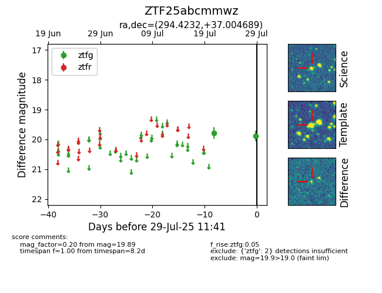

Target ZTF25abcmmwz at 2025-07-29 11:41, see:
FINK: fink-portal.org/ZTF25abcmmwz
Lasair: lasair-ztf.lsst.ac.uk/objects/ZTF25abcmmwz
ALeRCE: alerce.online/object/ZTF25abcmmwz
alt names
ZTF25abcmmwz (ztf,fink)
coordinates:
equatorial (ra, dec) = (294.4232,+37.00469)
galactic (l, b) = (70.8136,+7.58380)
photometry
last ztfg=19.89
2 ztfg detections
